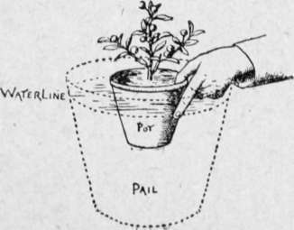
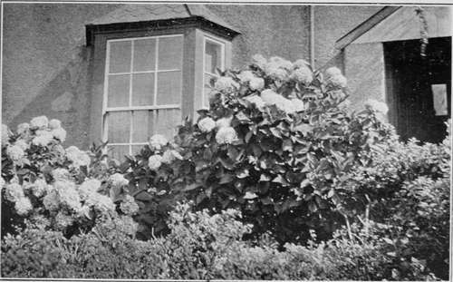

Chapter V. Seeds, Cuttings, Etc
Description
This section is from the book "Town Gardening", by Mary Hampden. Also available from Amazon: Town Gardening.
Chapter V. Seeds, Cuttings, Etc
How to Sow and Cover. Outdoor Seed Beds. Sweet Peas. Hardy Annuals. Dahlias and Chrysanthemums. Tuberous Begonias. Small Greenhouse Plants from Seed. Clematis Jackmanii. Other Climbers to Plant.
SEEDS are sown in boxes, pans or pots. There are reasons for choosing one sort of receptacle for some kinds of flower seeds, another kind for others. It is a question of good judgment. Begonia seed, which is very fine, will illustrate this : if sown over the surface soil (it is not covered in, or, if at all, only by a little fine silver sand) there is a great depth of soil below, whereas in a seed-pan or shallow box there is only a two, or three, inch depth. The greater the quantity of compost the more difficult it is to keep it just moist enough and never too moist. If the compost in the pot became waterlogged it would turn sour, or else mildewy, and the begonia seedlings, either the sprouts just starting or the visible green seedlings, would rot off. Yet no seed will germinate without sufficient moisture, so it is prudent to cover all pans, boxes, or pots of sown seed with a sheet, or many little overlapping pieces, of glass. These should be turned daily and wiped, and no water should be administered until the surface soil looks really dry.
Then strong sunshine on the glass would probably scorch up the seedlings, so gardeners lay some white paper or a little dry moss upon the glass. The danger with moss is that it may not be absolutely insect-free. However, baking it in a hot oven for a few minutes will make it harmless.
There is no hard and fast rule as to the depth to which seeds are to be covered in with sifted compost, but the general idea is that it may be to the same depth as their own greatest size. Take a little wallflower seed in the fingers, note that it is longer than it is broad ; sow it, and then lightly scatter as much fine compost as would be necessary to quite cover it stood on end.
Time that is spent in sowing, one by one, seeds that are not too minute to be picked up, is never time wasted. Overcrowded seed means not only that much seed is wasted, because the seedlings are crushed to death, but, even after a lot of thinning out has been done, the remaining seedlings will be much weaker than if they had grown in sufficient space from the first.
The soil seeds are sown in should be perfectly level, so that water will not lie in tiny pools, firm without being hard, and sufficiently moist for the seeds to adhere but not float.
Safe Plant Watering, by Partial Immersion.
It is always best to water seed receptacles from the bottom, not the top. This is done by holding the pot, box or pan up to the very rim in tepid water for a minute or two. When the moisture is seen to be appearing at the surface, making the compost dark, the watering has been successfully performed. Needless to say, seed receptacles must all be properly drained, but it is enough to use inverted crocks over holes or cracks, then fill up with ordinary compost, giving a surface half-inch, or inch, of very fine sifted compost. In the case of using pots, however, for any delicate subjects, there ought to be small stones or broken-up crocks for an inch above the inverted crocks, or else some coarse lumpy compost.
The more delicate the nature of the plant that is to be raised, the more desirable is silver sand in the compost. Equal portions of loam, leaf-mould and silver sand is a good seed compost. Manure is not needed, and would be harmful in some instances.
The compost for striking cuttings in may be the same. Before inserting a cutting, however, scatter enough silver sand on to hide the soil, then make the hole with a pencil, penholder, or round stick of suitable size ; this will thrust sand down with it. Insert the cutting, press the soil tightly round it with the finger-tips, add more compost so that the level is maintained ; sprinkle the foliage, then enclose the pot, pan, or box in a frame, or glass-covered box or cover it by a bell-glass. Cuttings should have their lowest leaves cleanly removed.
Cuttings of fuchsias and geraniums will root quite easily in May, June and July under glass, shaded from sun-heat.
Seeds of begonia semperflorens varieties, primula obconica, primula malacoides, the Fairy primrose, or the little trailing fuchsia procumbens, sown in glass-covered pans inside a sunny window-will produce plants for early winter bloom in a warmed greenhouse.
Seed sowing in town gardens is usually work thrown away, so if there is no greenhouse a small frame is almost a necessity. The next best plan is to choose the best possible site, quite in the open (or in front of a south, south-west or south-east facing wall, fence or hedge, some two or three feet from it), and make a raised bed to sow seeds in. It should be treated with a soil fumigant, or else deluged several times with a weak solution of carbolic liquid, be many times forked over during the following week, and will then be ready for use. A seed-bed must be quite surrounded by strip paths of sharp cinders, not soft ashes, as then slugs and snails will not cross to it.
A seed-bed may be made in a deep box if there is no garden.
Sometimes a town garden is fairly healthy and not infested by insects. If runner-beans are known to flourish in it there is no reason why sweet-peas should not, if safeguarded from birds by having several lines of black cotton stretched to little upright sticks about four inches above where the seedlings will appear. Sow at three or four-inch distances, after soaking the seed for at least twelve hours. Carbolic powder, sparingly cast along the rows, will be a sensible precaution.
In this fairly good garden seeds of many hardy annuals, not the largest-growing, may be sown, although May and June are very late months. Candytufts, Virginian stock, gilia tricolor, scarlet flax, small varieties of mignonette, sweet alyssum, night-scented stock, the rose of heaven (Agrostemma cceli-rosea), orange erysimum Peroffskianum and Viscaria cardinalis are suitable.
Double and single tuberous begonias are easy to cultivate if bought as bulbs of flowering size. They have to be laid on damp sand, inside a warm window, or in a frame or greenhouse, until they sprout. Actual sun-heat should be kept off them. As soon as the sprouts are a quarter of an inch long the tubers can be put one into each three-inch wide pot of sandy compost. When the pots are root-lilled and the weather genial the begonias can be planted in beds, window-boxes, etc., or be given pots of five-inch diameter.
Musk may be sown in pots now, stood inside windows; the seedlings must be thinned out to one inch apart.
The town gardener can hope to succeed also with oxalis rosea, one of our prettiest pot plants, having shamrock-like leaves and gay rose blossom. It is similar to musk in its requirements, for it may be cut down, when it has flowered itself out, and if given a top-dressing of manure-and-loam compost and kept watered, will soon bloom again. Also it may, like musk, be occasionally divided, and portions of its clump put an inch or two apart into other pots, window-boxes, tubs, etc. Both plants, and dwarf lobelias, are pretty in hanging baskets.
During May clematises from pots may be planted. It is necessary to dig a deep wide place, fork the bottom, lay in old manure, and partly fill in with good soil first. A clematis put in above that will be almost sure to thrive. A little old chopped manure may be mixed with all the upper soil.
Clematis Jackmanii will clothe a town house front gloriously, perhaps help to form a porch, or run up to be trained horizontally along a balcony's railing. There is a deep purple variety, in addition to the familiar violet-purple, also a white (alba) and a crimson (rubra). They are best suited by a west aspect, in my experience, but south-west is excellent, and north-west often succeeds. Full exposure on a south wall is generally too scorching.
In late May and June young plants of dahlias, and early-flowering chrysanthemums, should be bought and added to the garden borders, in sunshine or else potted up, or potted-on rather, as they are sure to be in pots already. They can be stood out. Carbolic powder should be scattered all round them.
A beautiful climber to obtain, in a pot, ready for turning out against wall, fence or trellis, is the Climbing Knotweed (Polygonum Baldschuanicum), a perennial that dies down each winter and puts forth vigorous growth of reddish stems and red-shaded leaves each spring. The florescence is whitish, in panicles, having a mist-like effect in June and July, but the next stage is one of myriads of creamy seed-vessels that are as decorative as flowers. A south or south-west aspect is desirable.
Then by buying three or four plants of the purple bellflower (Cobaea scandens) and putting them in rich soil in front of Virginian creepers, the town dweller can gain an uncommon and lovely flower show all summer and autumn, provided there is no stint with water. Cobaeas will climb in a greenhouse even faster than out of doors, and may be cultivated on sunny balconies or in glass porches, Three plants are enough for a tub or ten-inch pot. They can endure a sooty atmosphere if syringed twice or three times a week.
Hydrangeas.
Continue to:
- prev: Chapter IV. Planting And Potting
- Table of Contents
- next: Chapter VI. Daily Routine And Seasonable Work